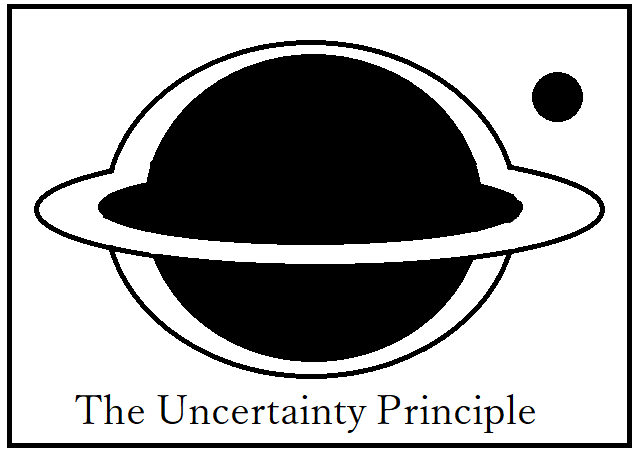
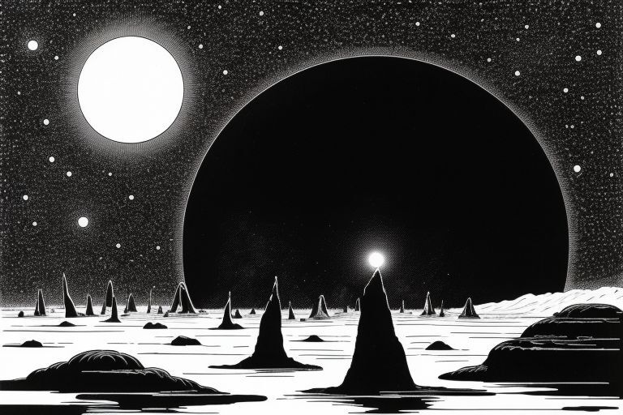
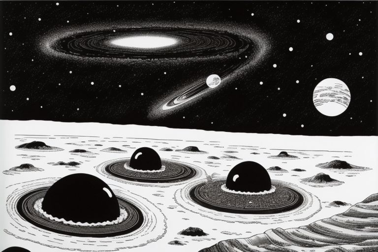
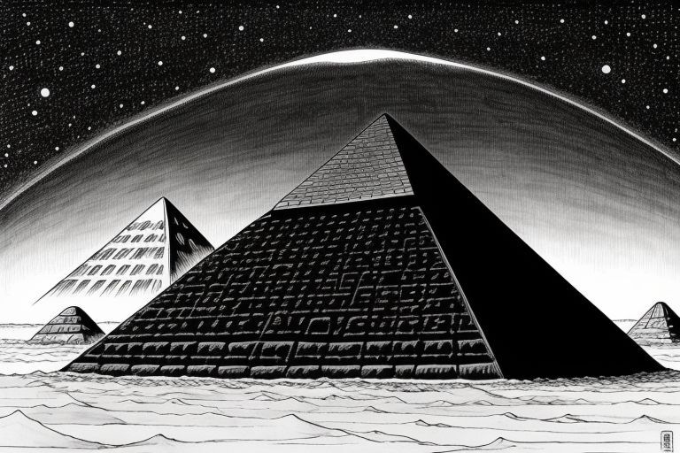
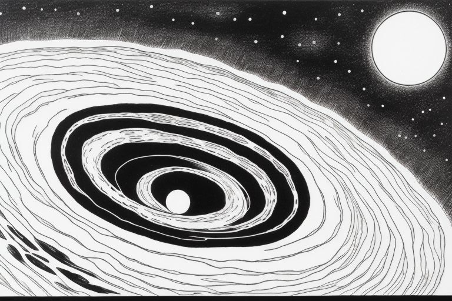
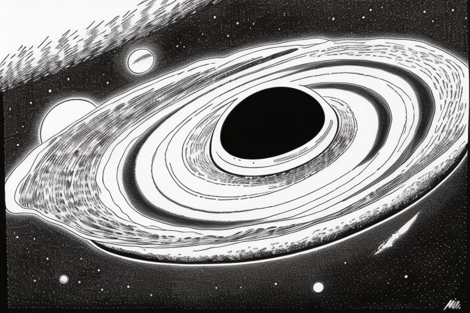

Основаня информация о проекте

Принцип неопределённости
Принцип неопределённости — многопользовательский текстовый квест, посвещённый
исследованию таинственной планеты Онтолярис, вращающейся вокруг чёрной дыры.

Предполагается, что каждый день на сайте будет появляться новая ситуация, на которую
можно будет ответить минимум двумя способами. В зависимости от ответа будут меняться
последующие ситуации. Раз в 10 дней, например, будут происходить сюжетно важные ситуации,
на которые можно будет ответить, например, текстом. Через 100 дней происходит конечное
событие, до которого дойдут не все игроки.

Предполагается, что игроки, находящиеся на одном и том же этапе (событии) смогут
общаться в чате (текстовый или голосовой, зависит от того, что я смогу реализовать).

Неправильный ответ на то или иное событие может привести к смерти игрока, которая либо
вернёт его в начало игры, либо отправит на предыдущий этап. Следовательно, и чат в котором
умерший игрок будет, будет не тем чатом, в котором он был.

На сюжетно важных этапах помимо текста будут появляться картинки, сгенерирвоанные нейронной
сетью. Можно даже попробовать сделать так, чтобы выборы игрока по ходу игры влияли на то, какой
запрос будет отправляться нейросети.

Как пользователь я хочу получить от своего проекта следующие шесть особенностей:
0. Каждый день на сайте должны появляться события, на которые я смогу отвечать предложенными
вариантами ответа, чтобы двигаться вперёд по сюжету.
1. Возможность взаимодействовать с другими пользователями в чате, чтобы иметь возможность
с остальными обсудить, какой вариант выбрать (для каждого события свой чат).
2. Сохранение своих результатов при выходе из квеста, чтобы можно было заходить обратно
на следующий день с другого устройства.
3. Отображение моих результатов в общей таблице (кто, как далеко смог зайти), чтобы знать,
своё положение в сюжете и общей массе (что-то по типу списка рекордов).
4. Возможность использовать текстовый ввод своего ответа в сюжетно важных событиях,
чтобы иметь больше влияния на исход событий (учитывается в концовке (этго можно отменить из-за сложности
реализации)).
5. Влияние моих действий на то, смогу ли я дойти до конца, чтобы иметь уникальный игровой опыт
(допустим три раза ошиблись, и нас заблокировали на сайте).
Из всего, сказанного выше, следует, что в проекте будет задействована база данных,
hmtl-страница с интерфейсом и приложение на C#, которое будет связывать воедино интерфейс квеста,
базу данных и, если получится, нейросети...